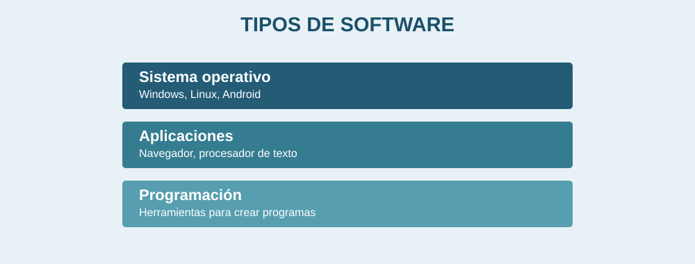

Software y sistemas operativos

El software es el conjunto de programas e instrucciones que utiliza un equipo de cómputo. A diferencia del hardware, no es una pieza física.
Software de sistema
El sistema operativo administra recursos y permite utilizar el equipo. Ejemplos: Windows, Linux y Android.
Software de aplicación
Son programas para realizar tareas, como escribir, hacer presentaciones, navegar en internet o editar fotografías.
El sistema operativo es fundamental para que podamos abrir aplicaciones y trabajar con los dispositivos.